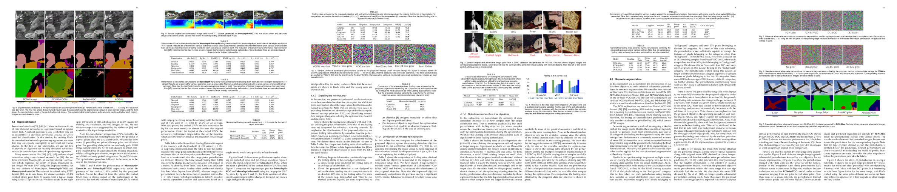
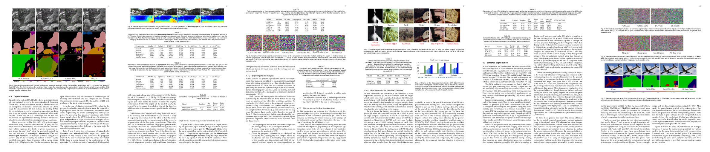

Abstract
Machine learning models are susceptible to adversarial perturbations: small changes to input that can cause large changes in output. It is also demonstrated that there exist input-agnostic perturbations, called universal adversarial perturbations, which can change the inference of target model on most of the data samples. However, existing methods to craft universal perturbations are (i) task specific, (ii) require samples from the training data distribution, and (iii) perform complex optimizations. Also, because of the data dependence, fooling ability of the crafted perturbations is proportional to the available training data. In this paper, we present a novel, generalizable and data-free objective for crafting universal adversarial perturbations. Independent of the underlying task, our objective achieves fooling via corrupting the extracted features at multiple layers. Therefore, the proposed objective is generalizable to craft image-agnostic perturbations across multiple vision tasks such as object recognition, semantic segmentation and depth estimation. In the practical setting of black-box attacking scenario, we show that our objective outperforms the data dependent objectives to fool the learned models. Further, via exploiting simple priors related to the data distribution, our objective remarkably boosts the fooling ability of the crafted perturbations. Significant fooling rates achieved by our objective emphasize that the current deep learning models are now at an increased risk, since our objective generalizes across multiple tasks without the requirement of training data for crafting the perturbations. To encourage reproducible research, we have released the code for our proposed algorithm at GitHub.
Paper
 

 Arxiv Link:
Arxiv Link: BibTex
title={Generalizable Data-free Objective for Crafting Universal Adversarial
Perturbations},
author={Mopuri, Konda Reddy and Ganeshan, Aditya and Babu, R Venkatesh},
booktitle = {arXiv preprint arXiv: 1801.08092 },
year = {2018}
}
Code Provided at GitHub.
Acknowledgement
T. B. A.